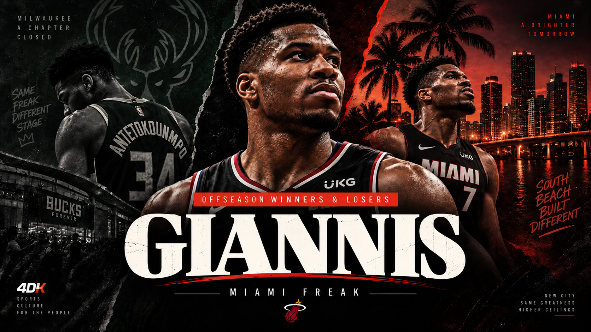
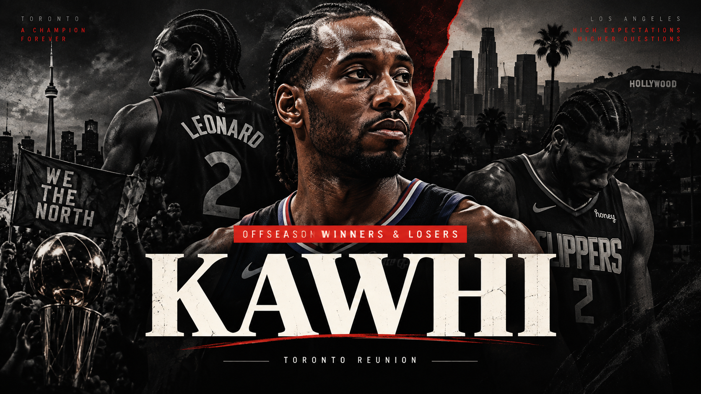
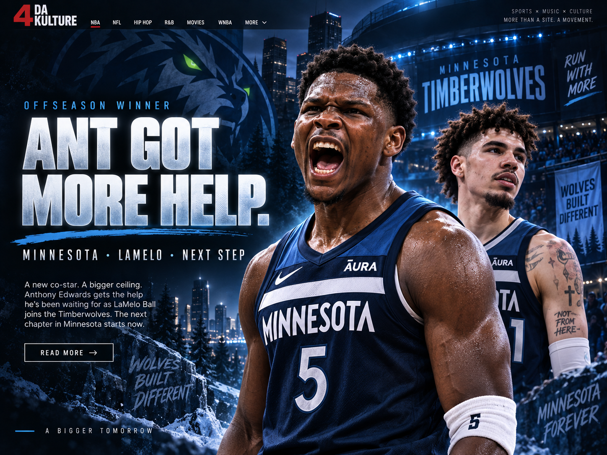
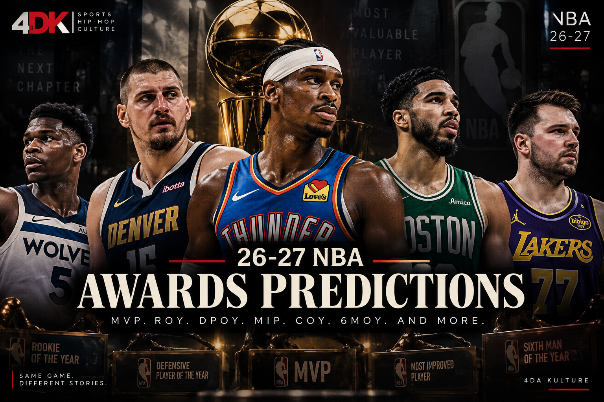
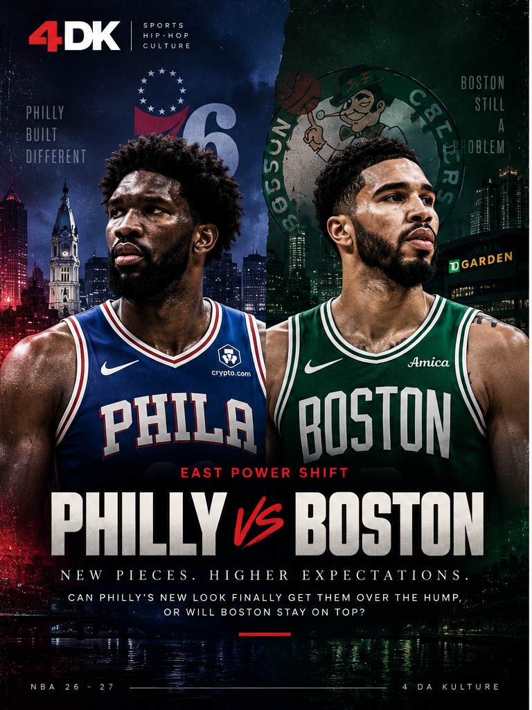
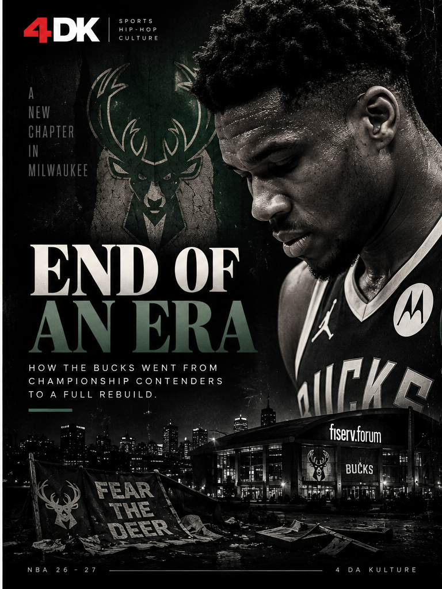

RUSS
NBA Legacy
The Russell Westbrook Debate Will Never End
From UCLA afterthought to MVP, triple-double king and one of the defining point guards of his era.
Read →Power shifts, player debates, predictions, pressure teams and franchise stories with a point of view.
From UCLA afterthought to MVP, triple-double king and one of the defining point guards of his era.
Read →
Giannis leaves Milwaukee for Miami — and may have his best shot in years at looking like an MVP again.
Read →
Kawhi gets his Toronto reunion. The Clippers are left with the bill.
Read →
Why LaMelo Ball might be the addition Anthony Edwards has needed.
Read →
Luka for MVP. Wemby for DPOY. Darryn Peterson for Rookie of the Year.
Read →
Philly loaded up while Boston lost its 1B. The East looks completely different.
Read →
From the 2021 championship to a 32–50 season and the end of an era.
Read →How Giannis changes Miami and what a move this big demands immediately.
Coming NextThe challenge changes once the entire league measures itself against you.
In DevelopmentA franchise-defining transition and a new centerpiece in Los Angeles.
In Development